Day 2 Friday 13 November
Half past two: the first packaged game, ray tracing measured, and day one cut in half
13 pictures 4 failures 7 min read
The first packaged game
At 01:19 the verifier packaged the game the way it will be handed in, and started it as a stranger would: unzipped into a new, empty folder, with nothing else of the project near it. It packaged in three minutes. It started, and the first picture came about five seconds after the start. It opened no network port, used at most 4.5 GB of memory, and carried no development plugin. Day one then played itself on foot for five and a half minutes.

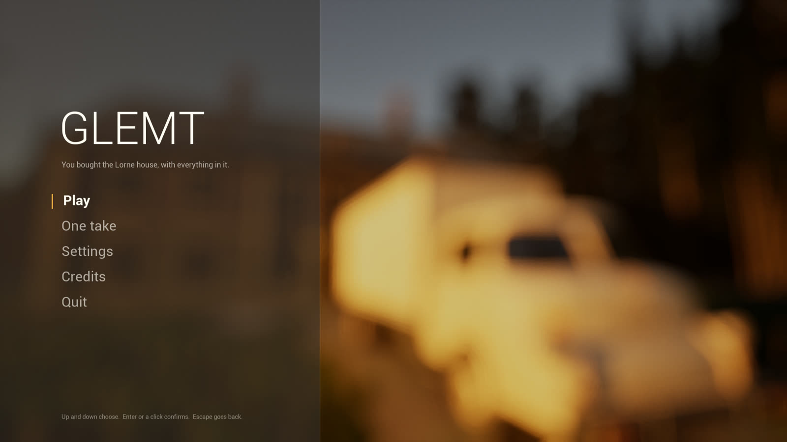
The first seconds of a day: the slate, then the eyes open.

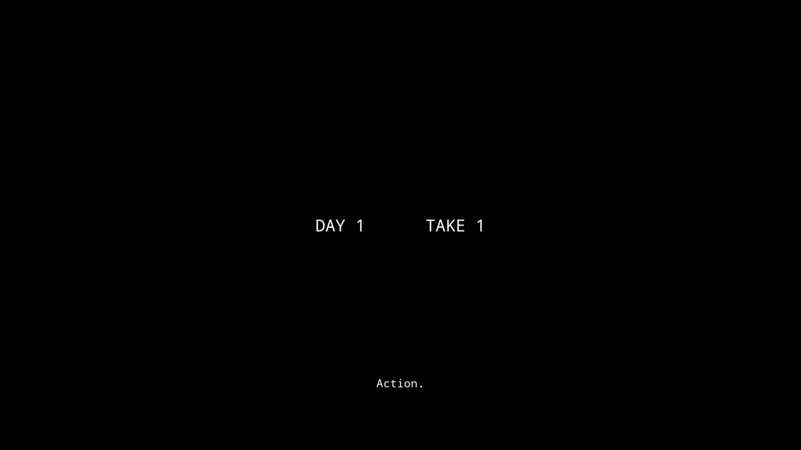

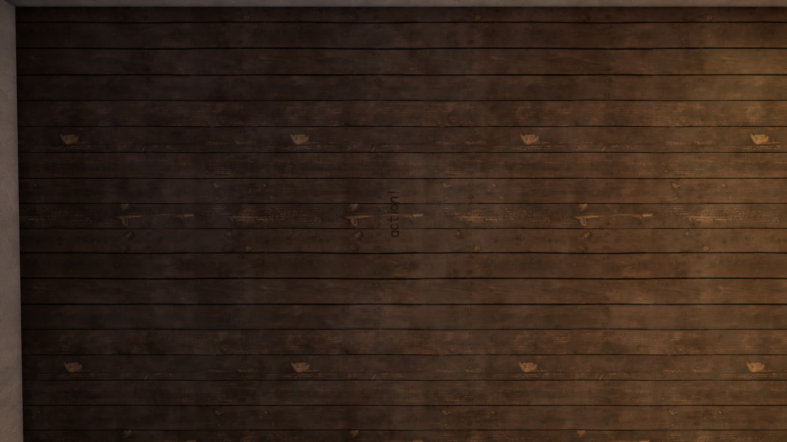
The word on the ceiling is in the story from the start: it was always there, and it is easy to miss. The picture also shows a fault: the boards' surface repeats, knot for knot, across the ceiling.

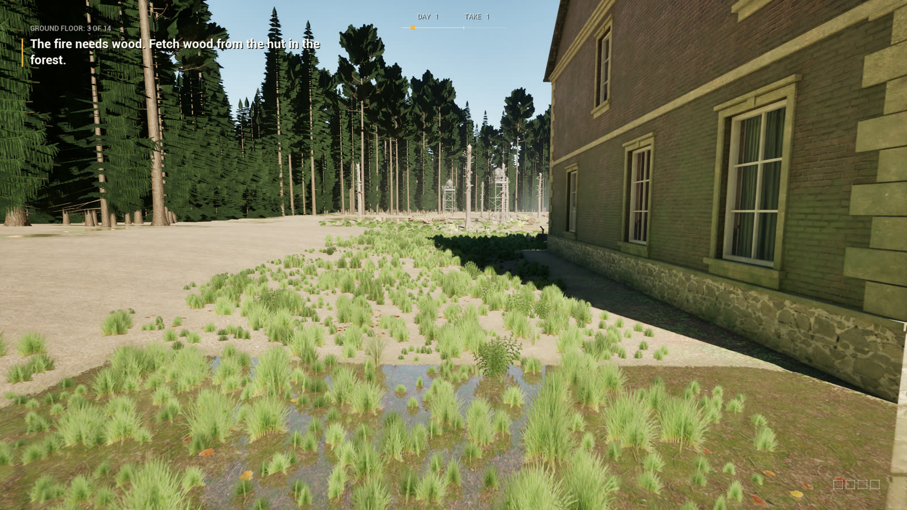
Ray tracing, measured view by view
The light and frame-rate agent ran the same four views in six ways, from the engine's software lighting to full hardware ray tracing with NVIDIA's Ray Reconstruction, and timed the graphics card in each. On the development PC, at 1920 by 1080 with DLSS at Quality, milliseconds of the card's time per frame:
| View | Software lighting | Full ray tracing |
|---|---|---|
| The hall at night, by a torch | 4.5 | 4.8 |
| The hall by day, the tall windows | 3.7 | 4.9 |
| The yard at night, the bonfire | 7.1 | 5.6 |
| The forest path at night, flashlight | 5.8 | 5.6 |
So the full mode costs about what the old lighting cost, and it is the better picture in every view. Ray-traced shadows were cheaper than the engine's shadow maps here, by 1 to 2.3 ms, because many of the meshes and all the leaves are costly for shadow maps. (The first figure in the table comes from a warm-up run.) Ray Reconstruction adds 0.4 to 1 ms and gives the cleanest picture.

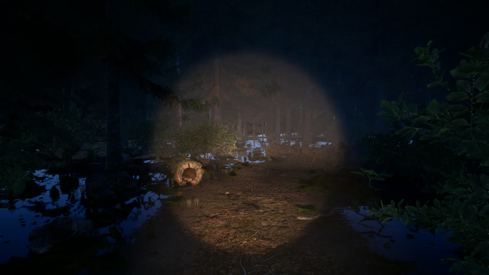
Before Software lighting: the sky's light leaks onto the ground under the trees.

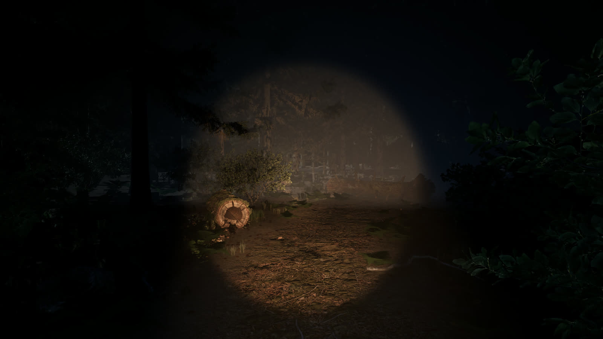
After Full ray tracing: dark where the crowns shade it.
The price of being right is that the house and the forest are darker without the leaked light, so the night's light had to be set again. The beam's hard edge, seen in both, is a known fault.
Nothing here was measured on a mid-range card, because there is only one PC. The agent's estimate: a card a quarter to a third as fast as this one would run the heaviest view at 40 to 60 frames a second in either mode, and would need DLSS set lower to hold 60. That is an estimate, and it is marked as one.
Day one, cut in half
The verifier's runs said it for three hours: day one is too long. At 00:50 the main agent cut it. Day one is now the hall and the dining room only, about half the things it had. The lighter lies beside the valuer's letter. Carrying is quicker. After a "Cut." the Director walks again only forty seconds later and from far off, and after two deaths on day one he only passes by. The first death also teaches: the game says how he found you.
The run before the cut was already the first that felt like the design's first ten minutes, in the verifier's words retold: the work, the fire catching, the price of the dead man's camera, dusk, "Places.", and at once a flash picture that shows him standing where nobody stood. Then hiding in the dark while he passes.

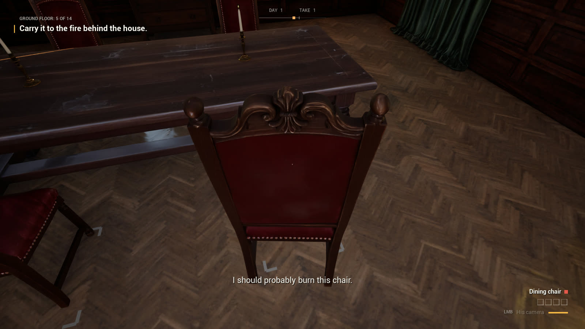
The camera and the hands
The camera in the buyer's hands was a modern digital compact with a screen, in a house that has stood untouched since 1974. It was made again as an early-1970s instant camera, from a new picture:

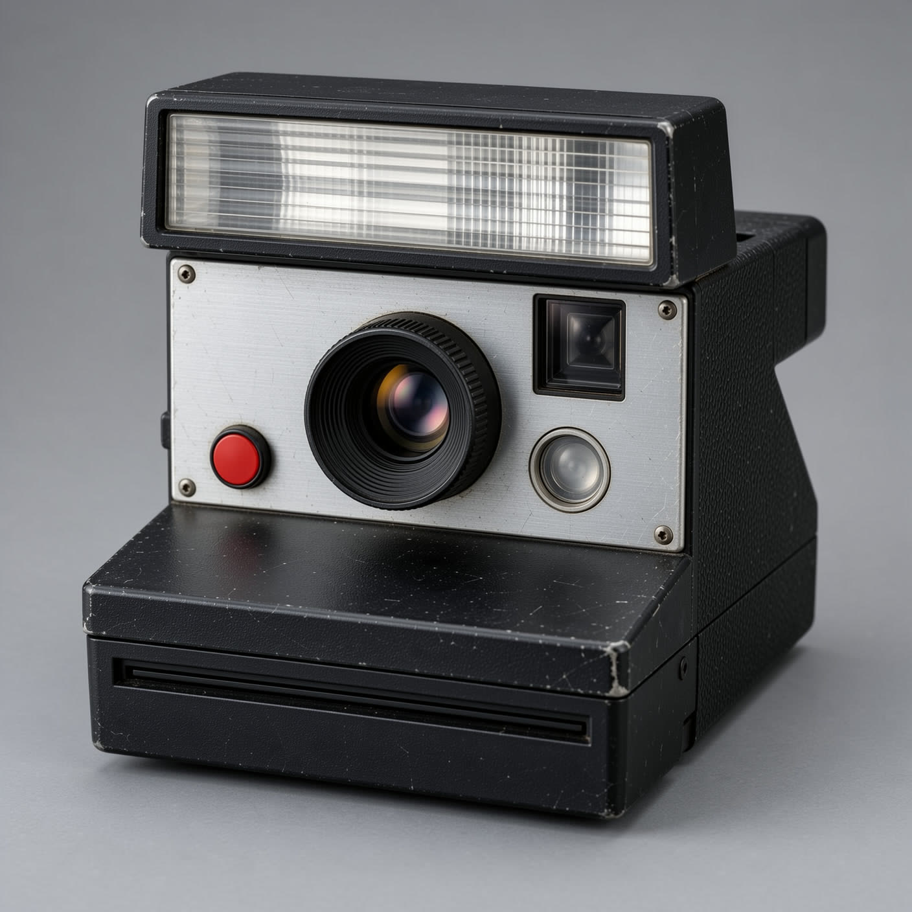
PromptA studio photograph of one old instant film camera of the early 1970s standing upright. A rigid boxy camera about fifteen centimetres wide,…264 words
A studio photograph of one old instant film camera of the early 1970s standing upright. A rigid boxy camera about fifteen centimetres wide, twelve high and fourteen deep: a body of black pebble-grained plastic, a flat front plate of dull brushed aluminium held by four small screws, a large round lens in a short black barrel in the middle of the front with a small round light sensor window beside it, a square viewfinder window above the lens to one side, a round red shutter button on the front, a long flash bar with a clear ribbed window across the whole top, and below the front plate a black step with a wide thin slot along its front edge where the print comes out. The plastic is scuffed and dusty, the aluminium scratched, the corners worn pale. The front step is plain black grained plastic from side to side, all one colour. Centred, the whole camera in frame with clear space around it, three-quarter view from the front and a little above so the front, the top with the flash and one side are seen. A seamless plain mid-grey studio background, soft even studio lighting from all sides, no cast shadow on the background. Photorealistic product photograph, natural colour, sharp from front to back. Nothing else in the picture: no neck strap, no photograph coming out, no hand, no film pack, no other objects. The camera is completely plain, only black, silver and one red button: no text, no letters, no numerals, no scale markings, no symbols, no logos, no brand names, no badge.
Rodin made the model from it; it put a badge-like lump and small marks on the back, which our own script pressed flat and painted over from a plain spot. The camera has no screen now: the flash picture comes out as a print with a white border that darkens in over a second. It went into the game at 01:49 and has not yet been photographed there.

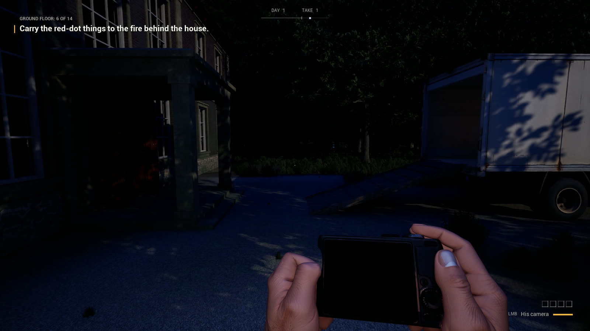


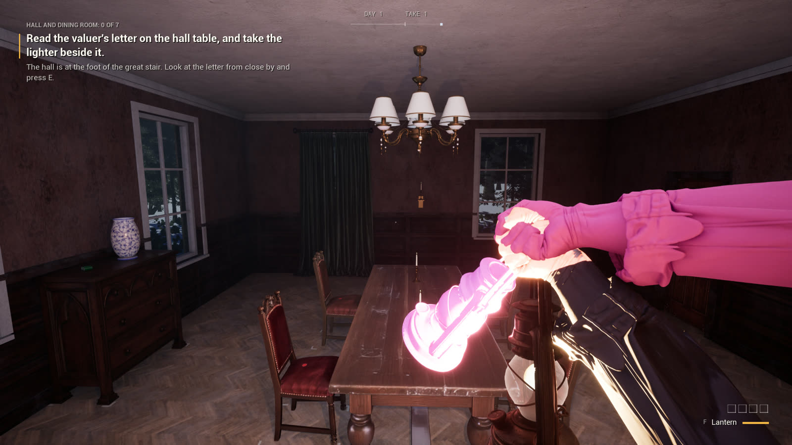
The hall, an hour on

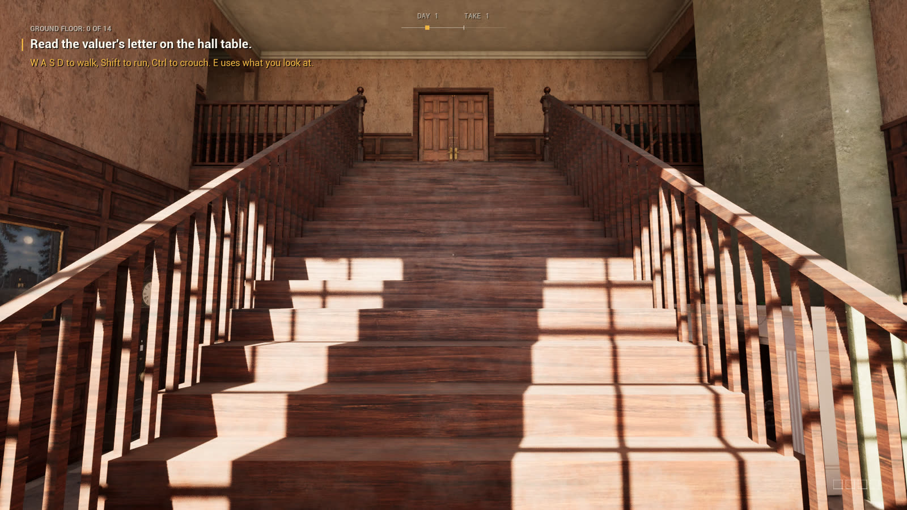
Before 23:38.

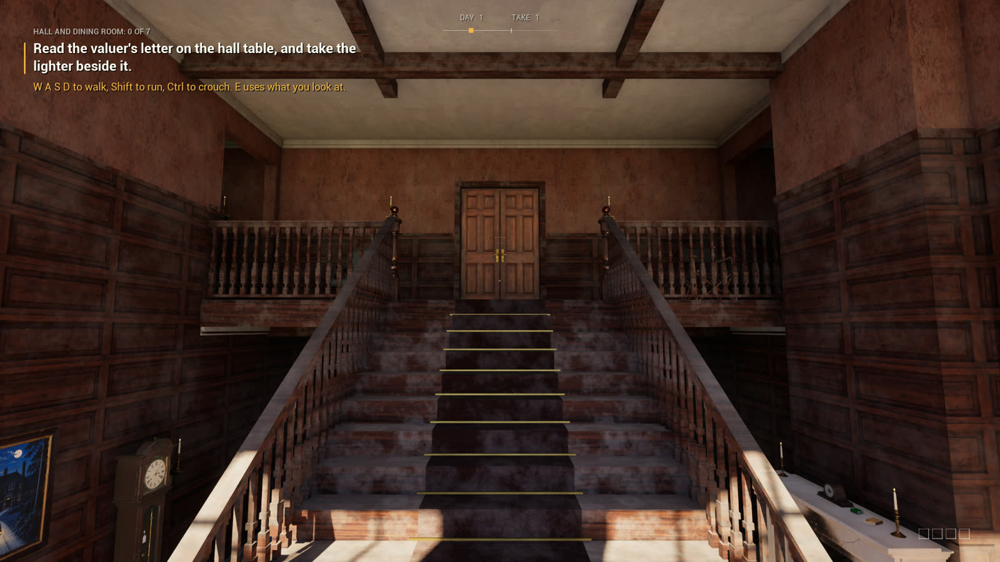
After 01:51: beams, turned balusters, a runner with brass rods.
The verifier called it the closest yet to the target's hall.
Next
The shrubs into the package, the white ground and the magenta hand, the frame rate measured again in the full ray-traced mode, the new day one played on foot from "Action." to bed, and the storm that is to rise with the dark.